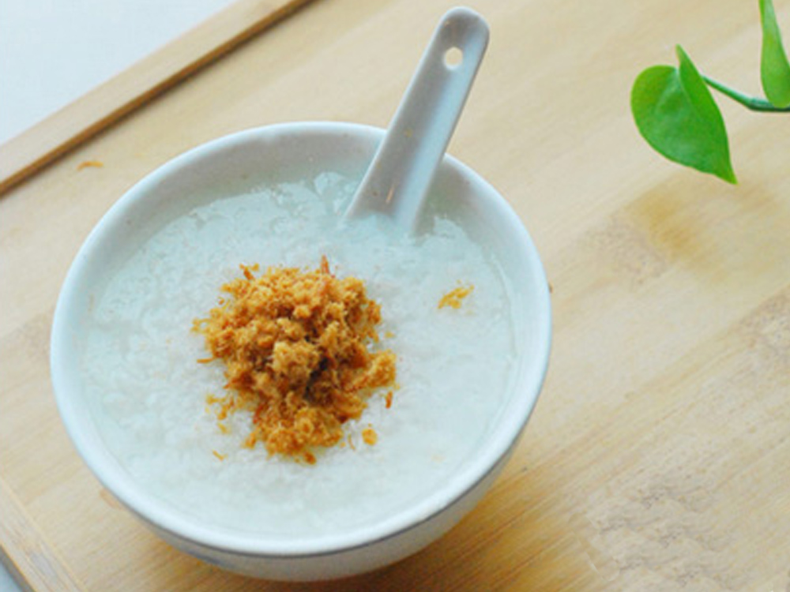

Congee

Overview
Plain congee is perfect for breakfast or served for when you are sick need to have a light meal.
- Prep Time: 2 min
- Cook Time: 25 min
- Total Time: 30 min
- Servings: 4
Ingredients
- 1.5 cup jasmine rice
- 2 L water
- 1 can Spam
- 1 can tuna (in water)
- 2 cloves of garlic
- pepper to taste
- 80 g pickled mustard stems (Zha cai)
- 50 g pork floss
- 1 pinch of flax seeds
Directions
- Add uncooked jasmine rice to a small pot with about 1 L of water. The ratio should be about 1:5 rice to water. For a less starchy texture, you can wash the rice before adding to the pot.
- Cook the rice for about 15-20 min, adding more water as necessary. Stir every minute to not let the rice burn stick to the bottom. Continue cooking until the congee is fully cooked to your desired thickness.
- In a small frying pan, add thinly sliced Spam to the pan over medium heat, and cook until your desired crispiness is reached. Remove Spam from frying pan and into a small bowl.
- Open the can of tuna and drain as much water as possible. Add tuna to the frying pan along with finely chopped garlic. Pan fry over medium heat unit no water can be squeezed out. Remove cooked tuna into a small bowl/
- In the same frying pan, add the pickled mustard stems and stir fry over medium heat for 1-2 min to bring out the flavour. Remove from frying pan and into a small bowl.
- Serve congee garnished with pork floss on top and add Spam, tuna, and pickle mustard stems as toppings for the congee.
Try other recipes below:
Banana-Blueberry Spinach Smoothie
Breakfast Burrito